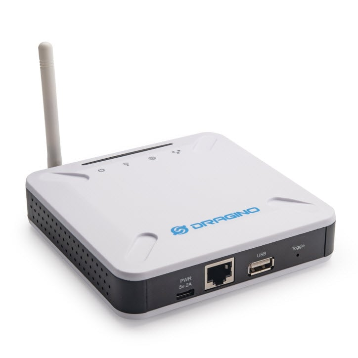
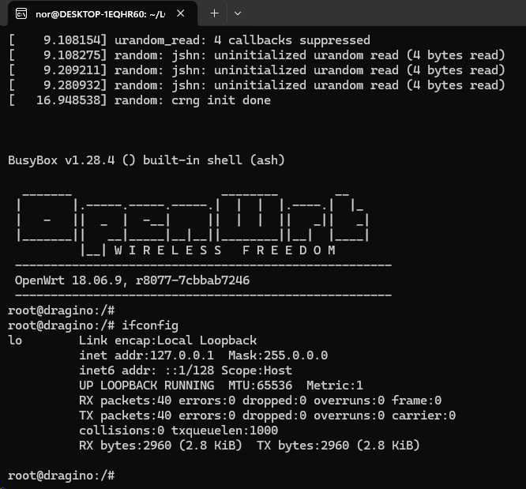
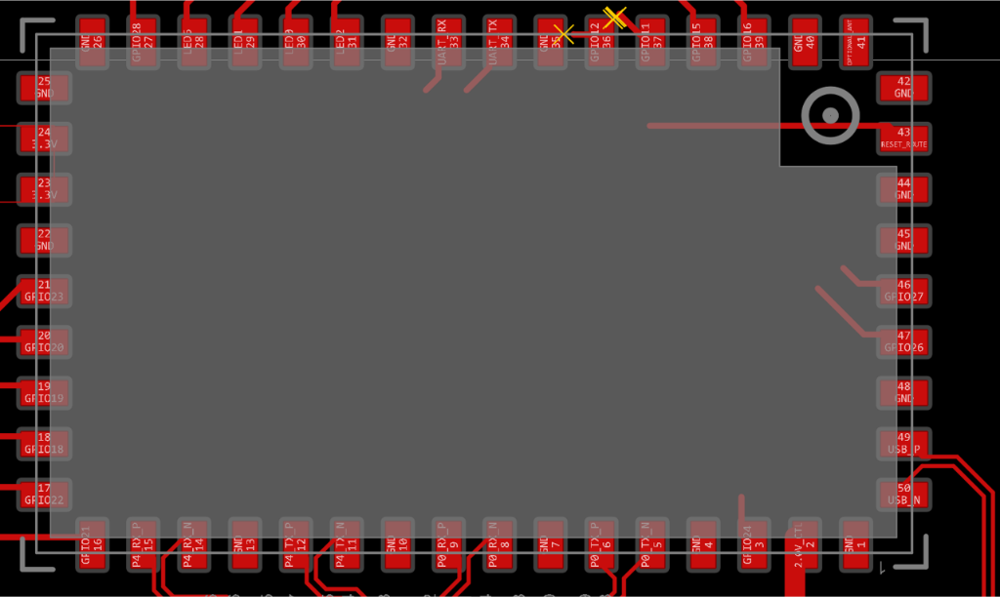
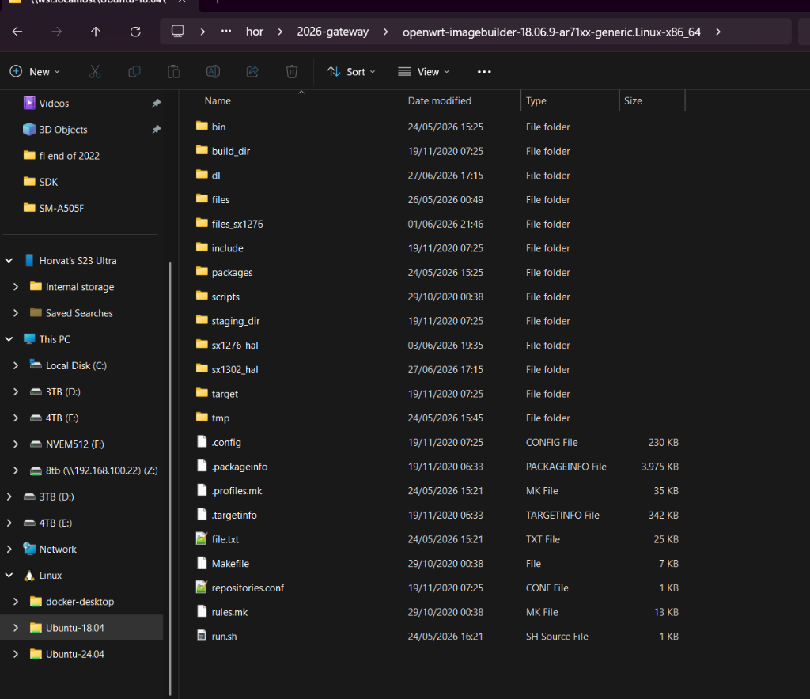
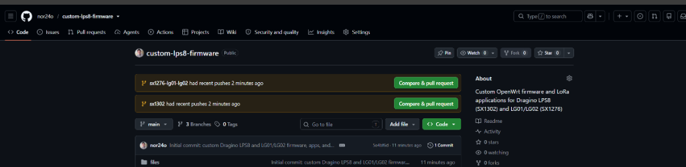

High-resolution captures of the actual hardware, factory PCB schematics, and system block diagrams.





Reference table mapping Dragino HE physical pins to Linux GPIOs, kernel drivers, and configuration JSON keys.
| HE Pin | Atheros Signal | Function / Subsystem | Kernel Driver / Node | Config Key (/etc/lora/config.json) | Notes / Behavior |
|---|---|---|---|---|---|
| Pin 3 | GPIO 24 |
SPI SCK (Clock) | kmod-spi-gpio-custom (bus0) |
— | Bit-banged SPI clock generated by AR9331 at 8 MHz. |
| Pin 18 | GPIO 18 |
SPI MOSI | kmod-spi-gpio-custom (bus0) |
— | Master Out Slave In data line to LoRa concentrator. |
| Pin 20 | GPIO 20 |
SPI MISO | kmod-spi-gpio-custom (bus0) |
— | Master In Slave Out data line from LoRa concentrator. |
| Pin 19 | GPIO 19 |
Radio 1 CS0 (NSS) | /dev/spidev1.0 |
"spi_path": "/dev/spidev1.0" |
Active-low Chip Select for SX1302 on LPS8 or Radio 1 on LG01/LG02. |
| Pin 38 | GPIO 15 |
Radio 2 CS1 (NSS) | /dev/spidev1.1 |
"spi_path": "/dev/spidev1.1" |
Second Chip Select on bus0 for LG02 dual-channel radio 2. |
| Pin 21 | GPIO 23 |
Hardware RESET | /sys/class/gpio/gpio23 |
"reset_gpio": "23" |
Pulsed HIGH (100ms) then LOW (100ms) by daemon before SPI init. |
| Pin 23 | GPIO 17 |
PA/LNA RF Switch | /sys/class/leds/dragino2:red:wan |
"pa_gpio": "dragino2:red:wan" |
Controls external Skyworks PA/LNA RF switch on LPS8. |
| Pins 1,2,4,5 | eth0 |
Primary RJ45 Port | ag71xx MAC0 (Port 4) |
/etc/config/network (br-lan) |
Bridged into br-lan as a DHCP client. No firewall bloat. |
| Pins 29,30,32,33 | eth1 |
Secondary RJ45 Port | ag71xx MAC1 (Port 0) |
/etc/config/network (br-lan) |
Populated on LG01/LG02. Bridged into br-lan so both ports act as LAN. |
| Internal RF | wlan0 |
2.4GHz 802.11b/g/n WiFi | kmod-ath9k (wmac) |
/etc/config/wireless |
Supports Access Point (AP) or Client (STA) mode via wpad-mini & iwinfo. |
| Pins 35 & 36 | GND / GPIO 12 |
Disconnected | — | — | Crossed out on baseboard layout; left floating / disconnected. |
All Semtech SX1302 HAL capabilities have been integrated into raw_lora_app and LuCI as optional, non-breaking features:
lgw_get_temperature() during heartbeat loops. Reported on TCP status port 5557 and displayed in live °C badge on LuCI Realtime Status.
lgw_get_instcnt() and last PPS trigger via lgw_get_trigcnt(). Enables microsecond-accurate timekeeping for Class B downlinks.
lgw_status() (TX_FREE, TX_SCHEDULED, TX_EMITTING, RX_ON) and per-channel preamble detect stats via sx1302_arb_get_debug_stats_detect().
rssic), SNR dynamic range (snr_min..snr_max), frequency offset (foff Hz), and hex payload preview into /tmp/lora_packets.json for LuCI live stream.
TIMESTAMPED / ON_GPS), Continuous Wave RF tone generator (MOD_CW), and instant transmission abort (lgw_abort_tx()).
sf_mask bitmask in /etc/lora/config.json or LuCI settings form.